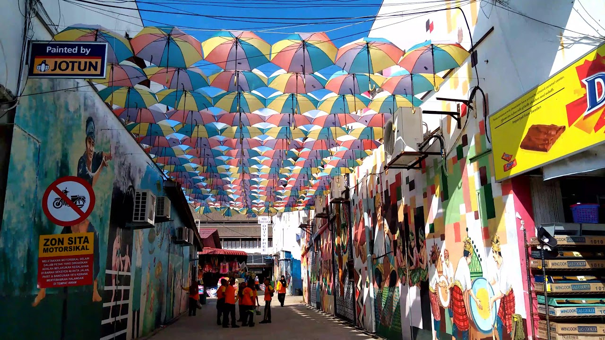
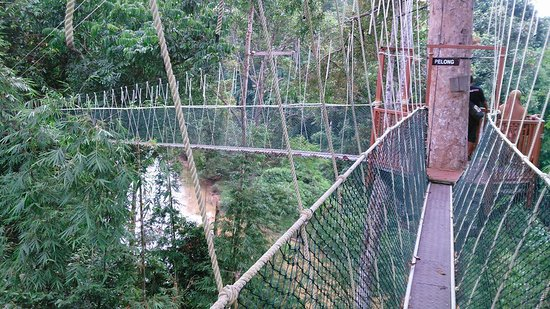
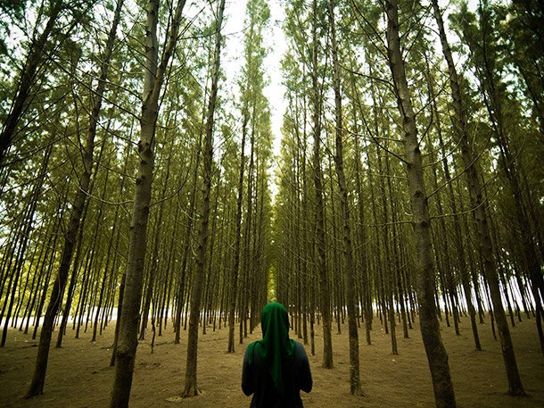

| Gunong Stong State Park | Moonlight Beach |
| Moonlight Beach | Wat Phothivihan |
| Siti Khadijah Market | Irama Beach |
| Miami Beach | Jahar Castle |
| Cultural Center | Museum Islam |
Pengkalan Kubor,Tumpat
It is located in Tumpat, Kelantan. This place is popular with foreign and local tourists because it is a duty free zone and there are many items for sale such as chocolates, kitchen utensils and clothes.
Kuala Koh National Park,Gua Musang
Kuala Koh National Park is situated at three borders of Kelantan, Pahang and Terengganu States. It is situated on the boundary of Kelantan Province, 96 kilometers from Gua Musang. The singularity and elegance of the flora and fauna make it suitable for tourism and inquiry. There are more than 300 bird species. So, here stop a good number of bird lovers. There are also fishing enthusiasts in this park who are there to hunt. In reality, it is a fascinating place for cameramen to test their photographic talent. For jungle, kayaking, canos and hiking, other tourists can select.
Senok Beach,Bachok
This beach attracts many visitors because of the neatly arranged tree position and it is a hotspot to take pictures including also the lighthouse located in a strategic place.
Beijing Mosque,Rantau Panjang

The Sultan Ismail Silver Jubilee Mosque is the real name of the Mosque of Beijing. The title derives from the Beijing Mosque, which is the same as the one thousand year old mosque in Beijing, China, and the Nujie Mosque. However, the Kelantan Beijing Mosque is still seen as modern. It was constructed in 2005 with a restaurant, multifunctional hall, library and clinic next to the principal prayer hall.